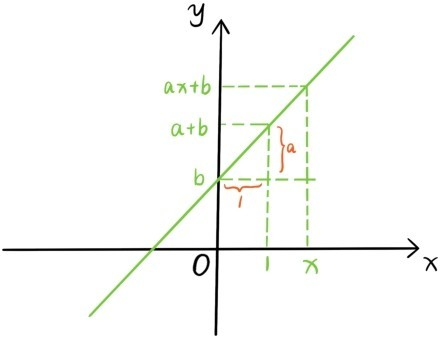

一次多项式所对应的函数y=ax+b(a≠0)为一次函数，例如y=-2x+1，y=x。函数y=ax+b中，x的系数a表示函数值的增长率，若x的值增加x0，变成x+x0，那么y的值就由ax+b变成a(x+x0)+b，增加了ax0。
也可以把这些函数看成是一个关于两个未知量x和y的方程，方程的每个解都对应着平面上的一个点。例如，x=0，y=1是方程y=-2x+1的一个解，对应这平面上的点(0,1)；另一个解x=1,y=-1对应这平面上的另一个点(1,-1)。一般地，方程y=ax+b的所有解对应的点构成的平面图形称为方程或者函数y=ax+b的图象。其他方程或函数的图象也是类似定义的，例如函数y=x2的图象就是所有满足y=x2的点(x,y)构成的平面图形。
该如何描绘这种方程的图象呢？教科书中的方法是先找出若干个点，比如y=-2x+1的点(-1,3)，(0,1)，(1,-1)，(2,-3)，再将这些点描在坐标平面时，你会观察发现这些点都在一条直线上，这条直线就是方程或者函数y=-2x+1的图象。
但是，观察是可能有误差的，如何断定这所描的有限个点会恰好落在一条直线上，即使这有限个点真的落在一条直线上，也不能说明函数或方程的所有点都落在这条直线上，因此问题来了：
问题54：为什么一次函数的图象是一条直线？

其实确定一条直线只需要两个点就好了。所以先给出方程或者函数y=ax+b的两个点(0,b)，(1,a+b)，过这两点作直线，根据直线平行和三角形相似的结论，方程的每个点确实都落在这条直线上。
从现在开始，y=ax+b不但可以表示函数和方程，还可以表示坐标平面上的一条直线。观察上图，我们发现直线y=ax+b的倾斜度仅仅依赖于x的系数a。实际上x的系数相等的两条直线是平行的，因为直线y=ax+b是由直线y=ax平移得到的。为什么呢？注意若(x0,y0)，是直线y=ax上的一个点，则(x0,y0+b)就是y=ax+b的点，所以在平面的平移变换
之下，直线y=ax变成直线y=ax+b。
一次函数的图象中，直线y=x比较特殊，它与平面的变换(x,y)→(y,x)相关联。注意直线y=x在这个变换下是保持不变的，实际上这个变换就是将整个平面绕直线y=x旋转180°。这里可能有学生会问：
问题55：为什么平面变换(x,y)→(y,x)就是将整个平面绕直线y=x旋转180°？
这个问题留给读者探索，回答这个问题的关键点是注意到平面上任何两个点的距离在这个平面变换前后都是保持不变的。
除了一次函数的图象是直线外，常值函数y=c，例如y=0，y=1，y=-2……也都是直线，是与x轴平行或重合的直线。
我们在第三章解过一元一次方程，比如-2x+4=0。这种方程其实可以转化成方程组的形式
这个方程组的解要同时满足这两个方程，这等于是说点(x0,y0)要同时落在直线y=-2x+4和x轴：y=0上。
因此解方程-2x+4=0在几何上就是对应着直线y=-2x+4与x轴的交点。这是一个至关重要的观点，而且可以立即推广。例如解更复杂的方程x2+4x-5=0在几何上就是对应着函数y=x2+4x-5的图象与x轴的交点。这就将解方程这种代数问题，转化为求交点这种几何问题。更一般地：
方程f(x)=0在几何上就是对应着函数y=f(x)的图象与x轴的交点。我们将这种交点称为函数y=f(x)的零点。
再回到平面直线，现在已经有了一次函数所表示的直线y=ax+b，和常值函数所表示的直线y=c，那么这些直线是不是已经包括了平面上的所有直线呢？
不是的！一些不包含y的方程，例如x=0，x+1=0，x-3=0……也都可以表示直线，是与y轴平行或重合的直线。这些直线不是函数的图象，因为它上面的点的x坐标是固定的，y坐标却可以取得任何值。
可以将这3类直线统一表示成方程ax+by+c=0的图象，这里要求a和b不同时等于0。在平面的平移变换
之下，方程ax+by+c=0的图象变成方程a(x-b)+b(y+a)+c=0的图象。但是化简之后，你会发现，这两个方程实质上是一样的。所以直线ax+by+c=0的方向与从原点指向(b,-a)的方向是平行的。
在第三章，解过二元一次方程组
这个方程的解，现在就可以看成是直线ax+by-e=0和直线cx+dy-f=0的交点，而这两条直线的方向分别与方向(b,-a)，(d,-c)平行。所以当x与y的系数比值不相等，即a:b≠c:d或者ad-bc≠0时，两条直线相交，方程组有唯一解，这是二元一次方程组的几何解释。实际上从代数角度来看，如果x与y的系数成比例，用消元法就是消去一个变量，留下另一个变量。
这里要提醒读者留意ad-bc这种表达式是非常重要的，后面还会多次碰到，为了突出重要性，为这个量引入一个记号
提问时间
5.3.1 求与直线y=2x平行，且过点(2,3)的直线方程。
5.3.2 求过点(-2,1)和点(2,5)的直线方程。
5.3.3 在平面变换(x,y)→(y,x)之下，点A和点B分别变换为点C和点D，证明：AB=CD。
5.3.4 请解答问题55。
5.3.5 点A和点B是平面上两个不同的点，请用坐标方法证明到点A和到点B的距离相等的所有点构成一条直线。